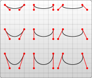

SVG stands for Scalable Vector Graphics,
and is used to draw shapes with HTML-style markup.
It offers several methods for drawing paths, boxes, circles, text, and graphic images.
Inserting SvG images
An SVG image can be added to HTML code with just the basic <image> tag that includes a src attribute, SVG is not
pixel-based, so it can be magnified infinitely with no loss of quality.
Drawing a Circle
To draw shapes with SVG, you first need to add the <svg> element tag with two attributes, width and height.
To create a circle add the <circle> tag between <svg> and </svg>, the attributes used for the <circle> tag are the following: cx,cy,r,fill,stroke and stroke-width, other attributes can be used too, but these are the basic ones, here is a list of what each attribute does:
cx="number"
defines the center of the circle using the x coords
cy="number"
defines the center of the circle using the y coords
r="number"
defines the radius of the circle (how big the circle is)
fill="color"
determines the color inside of the circle
stroke="color"
determines the color around of the outline of the circle
stroke-width="number"
changes the width of the outline of the circle
Lets try to create a circle with this code: <p align="center"> <svg width="300" height="200"> <circle cx="150" cy="100" r="50" stroke="black" fill="red" stroke-width="5"> </svg> </p>
Now lets try to create something more complicated by using multiple circles, in order to add more than one shape the shape's tag should be closed by either writing </circle> or writing the tag like this: <circle />, see the example below to understand better, lets create two eyes:
The <rect> tag defines rectangle, its not a circle so we don't use cx and cy to move it,
we use x and y, we don't use r either, you can now change it's size with width and height attributes, lets make
a rectangle: <p align="center"> <svg width="300" height="200"> <rect width="200" height="100" x="50" y="40" fill="green"> </svg> </p>
Lines are a little more complicated, you just have to understand how they work, you have to use x1 y1 and x2 y2, the x1 y1 define where the start of the line will be, x2 y2 define where the end of the line will be, lets try this:
<p align="center"> <svg width="300" height="200"> <line stroke="black" stroke-width="3" x1="300" y1="200" x2="1" y2="1"> </svg> </p>
Something even more complicated is the polyline, defines a shape built from multiple lines,
it works pretty much the same way with the line, but we can continue the path of the line for as long as we like, two new attribute we are gonna use are points="x1 y1, x2 y2, x3 y3,etc", this is the attribute that allows us to choose the points of the
path, and stroke-linejoin, this specifies the shape of the corners of the path, there are many types you can use, I will use miter, you can also use round, bevel, inherit and more, lets try this:
Ellipse:
The ellipse is similar to the circle, with one exception, you can independently change the horizontal and vertical axes of it's radius, using the rx and ry attributes.
Here is an example of how an ellipse is made: <ellipse cx="15" cy="100" fill="green" rx="100" ry="70">
Polygon
The polygon element is used to create a graphic with at least three sides. The polygon element is unique because it automatically closes off the shape for you, its used the same with with polyline, lets try this:
I used the exact same code I had used before for the polyline, only changed the name from polyline to polygon, and as you can see it
closed the shape by it self and made it a triangle, you could also use fill attribute to give it color.
Tutorials that helped me:
Here are two very useful videos I found, you can watch these whenever you need a reference, first one
explains how SVG works:
Second one goes over the shapes and stuff:
Transform attribute:
The transform attribute defines a list
of transform definitions that are applied to an element and the
element's child.
Transform can be used by bothCSS and HTML, the syntax
however is not the same.
Translate transform function:
The translate(<x> [ <y> ] ) transform function
moves the object by x and
y. If y is not provided then it is
assumed to be zero.
When I scale down a circle
with cy="20" for example, if I
scale it down x2 by writing transform="scale(1,2)"
it's cy gets doubled as if the circle
is dragged down, thats why I had to change the cy
of the circle I wanted to scale down from 60
to 30 so that after it was scaled down x2 it
became cy="60" so that the black circle
was maintained at the center. When
the circles were aligned to
cx="0" and cy="0" their
center didn't change no matter how much I
scaled them because 2*0=0, I hope you understand.
Something I want to add is that you can flip
an element by using negative
numbers, you basically create a mirror,
so if your element was at 40x
and 40y for example it would flip
and go to -40x and -40y, thats why
when you want to flip an element
you should also use translate to fix
it's position.
Remember, moving it to the right will only take the element
further to the left, because it works like a mirror,
if I move it -80 to the left so it gets at -40 it's reflection will be at 40, like this:
The rotate( <a> [ <x> <y> ] ) transform function
specifies a rotation by a degrees about a given point.
If optional paramaters x and y are supplied, the rotation
is about the point (x, y).
Using these two transform fuctions together with some other transform functions you can create shadows
of your elements, using SkewX to define the x axis
of the shadow and SkewY to define the Y axis of the shadow.
The matrix (<a> <b> <c> <d> <e> <f>)
transform function specifies transformation in the form of a transformation matrix
of six values.
The Matrix is the hardest transform fuction, but I will try to explain it as
well as possible.
a and d scale the element, a is for x
and d for y.
b and c skew the element, c is
for skewX and b is for skewY.
e and f translate the element, e is
for x and f for y.
In the picture above, it shows the values move the corners of the element.
Let me explain the x first, as I said when we learned about scale,
when you scale an element x2 horizontally you
also change it's position, if it's up left corner was at
x="30" it would go to x="60" since 30*2=60, thats
why the picture above writes a * x.
About c * y I'm not very sure why it works this way, from what
I have understood skewing works differently while using matrix,
it takes smaller values which makes sense since if I used 1 for skewX
for example a rectangle at y="80" would move 80 pixels to the right,
if we don't want it to move that much we need to use smaller numbers than 1. Also, something I forgot to say before, you can use skewing to rotate an
element, if one uses the negative number of the other, like this: b="x" c="-x"
Anyway, both scale, skew and translate transform functions
move the element therefore, thats why we do (a * x) + (c * y) + e to
find at what x coordinates each corner of the rectangle will move to.
For that same reason we do (d * y) + (b * x) + f to find at
what y coordinates each corner of the rectangle will move to.
You use stroke
attribute to set the color
of the stroke, you used
stroke-width to set the thickness
of the stroke and you
use stroke-opacity to
set the opacity of the stroke.
<!-- The miter value is the default value --> <rect width="50" height="25" x="30" y="50"
fill="red" stroke="black" stroke-width="3"
stroke-linejoin="miter"/>
<!-- The bevel value --> <rect width="50" height="25" x="115" y="50"
fill="cyan" stroke="black" stroke-width="3"
stroke-linejoin="bevel"/>
<!-- The round value --> <rect width="50" height="25" x="200" y="50"
fill="pink" stroke="black" stroke-width="3"
stroke-linejoin="round"/>
</svg>
</p>
Output:
The stroke-dasharray and
stroke-dashoffset are the most
interesting ones so far.
The stroke-dasharray attribute works
a little weird, it can take many different values
to define gaps on your stroke.
When you use one value, you
define the length of each
visible part on your stroke
and the gap seperating each
part has also the same length
You can play around with it to add more values,
therefore, more different sized parts,
for example, if I wanted to make my stroke
be ten length visible, then have 1 length gap, then
5 length visible, 1 length gap, then 20 length visible, 5 length gap and continue like this I would
write the following code:
It only works like this if you are
using an even number of values,
for example, two values, four values,
six values, etc, see what happens when you use
five values:
Its like before when I
used one value, since you haven't
specified what the final gap should
be, when the system reaches the final value
and starts over again, he reads the frst value which
is 10 as a gap value, then the next
value which is 1 as
a part value, etc, therefore,
what was before visible now becomes a
gap and what was a gap
becomes visible, after it
reaches the final value again,
and starts over again, it gets normal again, I hope you understand.
The stroke-dashoffset is used to
move the stroke and is
used together with stroke-dasharray, lets get
the path we made above for example:
We know that the first value in
the stroke-dasharray is 10,
therefore, if I wrote dashoffset="10"
the stroke would move to the left
and hide this ten length, lets try this:
SVG animations can be created using the <animate> or <animateTransform> elements.
In the <animate> element there are some new attributes you need to use in order to determine the behavior of the animation, first attribute is
attributename="x/cx/stroke/fill/etc,etc", this determines what attribute of your shape you want to animate, if you want for example to make it change color you are going
to chang the fill attribute, if you want to make it move to the right you change the x or cx attribute, you can of course add more <animate> elements in
a shape to make multiple changes.
Another attributes we are going to use are the from="" and to="" attributes, this determines what the change is, lets say for example that you have chosen to edit the fill
attribute of your shape by writing attributename="fill", and your shape at first is red, and you want to make it green, you will write from="red" to="green", this however allows you to make only one change.
If you want to make more changes, you can use the
values="" which allows you to put many changes, for example, if you want to make your shape go from
x="0" position to x="100" and then back to x="0" you will write values="0;100;0".
Then, we have the dur="" attribute, which determines how
much time it will take for your shape to make a full loop of the animation you have added, for example, if you want it to do it in ten seconds you write dur="10".
The reapeatCount="" attribute determines how many times the animation will repeat, you can write repeatCount="indefinite" to make it never stop repeating the animation.
Lastly, we have the fill="" attribute which defines the final state of the animation, it has few
values you can use, for example, fill="freeze" keeps the state of the last animation frame,
fill="remove" keeps the state of the first animation frame, you will see the difference only if your
animation ends and doesn't repeat it self over and over again.
Here is a list of the new attributes that are used for animations:
attributeName:
Specifies which attribute will be affected by the animation
from:
Specifies the starting value of the attribute
to:
Specifies the ending value of the attribute
values:
Used to add more than one animation values
dur:
Specifies how long the animation runs (duration)
fill:
Specifies whether or not the attribute's value should return to it's initial value when the animation is finished (values: "remove" resets the value, "freeze" keeps the "to value")
repeatCount:
Specifies the repeat count of the animation
begin="click"
Starts the animation on click
end="click"
Ends the animation on click
begin= "mouseover"
Starts the animation when your mouse crosses over the shape
end = "mouseover"
Ends the animation when mouse crosses over the shape
begin="mouseout"
Starts the animation when your mouse isn't on the shape
end="mouseout"
Ends the animation when mouse crosses out of the shape
If you read the list above you probably noticed two new attributes I didn't talk
about before, the begin="" and end="" attributes, these are pretty simple to understand,
lets make a rectangle that changes color when you put your mouse over it, by writing begin="mouseover", and then
we will make it so that in order to stop it you should click on it by writing end="mouseout", here are the results:
<animateTransform>
The <animateTransform> element animates a transformation attribute on it's target element, thereby allowing animations to
control translation, scaling, rotation and skewing.
It pretty much has the same attributes with the <anime> element, however, the value of attributeName="" attribute should be
attributeName="transform" and then in order to determine what type of transform you want, you use the
type="", we now want to make a rotate transformation, therefore we will type type="rotate".
To make a shape rotate, you need to determine two things, how many degrees you want it to rotate, for a full
rotation for example you make it rotate 360 degrees, then you also need to determine around what will it rotate?
do you want it to rotate around it's center? or do you want it to rotate around an object? if you want it to rotate around
it's center, and it's center is x100 y100 for example, you will write from="0 100 100" to="360 100 100", which will
make it rotate around it's center, therefore, it will rotate without moving, you can also use values="" attribute to add many
different rotations.
The SVG<animateMotion> element can define how an element moves along
a motion path. If you need to understand it better, I recommend you first learn how paths
are made, its right below the animation section of this page.
The path I made wasn't needed, as long as the path is defined in the <animateMotion> element
its going to work, I just made the path visible so you can understand better the element.
There are some more attributes you can use for this element, the rotate attribute, you can
type rotate="number", rotate="auto" or rotate="auto-reverse", this attribute defines
a rotation applied to the element animated along a path, usually makes it pointing in the direction of the animation.
One last element used for <animateMotion> is the <mpath xlink:href="#name" element, this is used
to reference a path without having to copy paste the code, if the id of a path
is id="path1" for example, you can type <animateMotion, etc, etc> <mpath xlink:href="#path1" /> </animateMotion>.
<set>
The <set> element is used for setting the
value for a specified duration.
It supports all attribute types, including those that
cannot reasonably be interpolated, such as string and boolean values.
Code:
<p>
<svg width="500" height="500" style="border: green solid;">
This animation doesn't seem to work properly with repeatCount, not sure why, you can use
the calcmode="discrete" attribute if you want to make a complete animation
that jumps from one point to another without being animated.
Calcmode attribute:
The calcMode attribute specifies the
interpolation mode of the animation.
The default mode is linear, however,
if the attribute does not support the linear interpolation
(e.g. for strings), the calcMode attribute is
ignored and discrete interpolation is used.
Discrete: specifies the
animation function and will jump from one value to the next without
any interpolation.
Linear: simple linear interpolation between values
is used to calculate the animation function. Except for <animateMotion>,
this is the default value.
Paced: defines interpolation to produce an even pace
of change across the animation. This is only supported for values that define
linear numberic range, and for which some notion of "distance" between
points can be calculated (e.g. position, width, height, etc.).
If paced is specified, any keyTimes or
keySplines will be ignored. For <animateMotion>
this is the default value.
Spline: Interpolates from one value in the
values list to the next according to a time function
defined by a cubic Bezier spline. The points of the spline are
defined in the keyTimes attribute, and the
control points for each interval are
defined in the keySplines attribute.
KeyTimes attribute:
The keyTimes attribute represets a list
of time values used to control the pacing
of the animation. Each time in the list corresponds to
a value in the values attribute list.
The time values should be between 0 and 1,
see example below to understand it better:
The keyTimes list semantics depends upon
the interpolation mode:
For linear and spline animations, the
first time value in the list must be 0, and the last time value in the list must be 1.
The key time associated with each value defines when the value is set;
values are interpolated between the key times.
For discrete animation, the first
time value in the list must be 0. The time
associated with each value defines when the value is set; the
animation function uses that value until the next time defined in the list.
KeySplines attribute:
The keySplines attribute defines a set of
Bezier curve control points associated with the
keyTimes list, defining a cubic Bezier function
that controls interval pacing.
This attribute is ignored unless
the clacMode attribute is set to spline.
Code
<svg width="400" height="400" viewBox="0 0 100 100" style="border: green solid">
So, if you know how to create curves, it will
be easier to understand, the start of the curve
is at the left down corner, the end is at the up right corner,
you should use the values x1 y1, x2 y2 to define
the control points of the curve,
if the curve is a straight line then
the animation has a straight pacing, if the
curve is curving towards down the animation
slows down, if it curves up the animation speeds up.
The red line represents
the curve made by the values
0 0 0 0, and it defines the pacing
from the first keyTime value which is 0 to
the second keyTime value which is 0.5.
The blue line represents the curve
made by the values 0.5 0 0 1, and it defines
the pacing from the second KeyTime value
which is 0.5 to the third keyTime value which is
1. The circle takes the same time it took before
to make the movement, what changes is that instead of keeping a medium speed
for the whole movement it starts slower and speeds up later.
Additive attribute:
The additive attribute controls wether or not
an animation is additive
It is frequently useful to define animation as an offset or delta to an attribute's
value, rather than as absolute values.
The additive attribute can take two values,
the default is replace, specifies
that the animation will override the underlying value of the attribute and
other lower priority animations. The second one is
sum, specifies that the animation will add to the underlying
value of the attribute and other lower priority animations.
What I want you to understand from this example, is that
the values of the second animation
were combined with the values of the first animation,
while in the first animation we used the common
coordinates system we usually use in the second animation
we didn't, if I wrote 10 for example it would not move to
y="10", it would move 10 pixels down.
As you can see, to go from 90 to 0
the first animation would move the rectangle
up -90 pixels, so in the second animation I
wrote 90 as the second value, since 90-90=0, and
the animation was canceled.
Accumulate attribute:
The accumulate attribute controls wether
or not an animation is cumulative.
So, I want you to understand from this example that, the red rectangler
goes from 0 to 10, and the accumulate attribute
makes it repeat that movement again and again, it move that 10 pixes down
forever, in the blue rectangle it first move from 0
to 10 then to 100 and then back to 0, it then
does the exact same movement over and over again, the problem is, if I had added
90 for first value for example, every time the rectangle made
the movement it would be teleported 90 pixels down or up, thats why I
used 0 for first value, so the red rectangle continues
moving straight down without a problem.
This attribute doesn't seem very useful in my opinion, but
there has to be a use for it I guess somehow, I just don't see it,
it also doesn't work very well, not very flexible, maybe I just don't
use it correctly, who knows, I couldn't really find any examples of
how it works online.
Restart attribute:
This attribute has three values, first is never, second is always
and third is whenNotActive. This attribute specifies when an animation
can restart, you could use it together with JavaScript for example to make a restart button.
Begin and end values for animations
Offset example:
This value defines a clock-value that
represents a point in time relative to the beginning of the SVG document,
usually the load or DOMContentLoaded event. Negative values are valid.
This value defines a syncbase and an
optional offset from that synbase. The
element's animation start time is defined relative to the begin or active
end of another animation.
A valid syncbase-value consists of an ID reference to
another animation element followed by a dot and either begin
or end to indentify wehter to synchronize with the
beginning or active end of the referenced animation element. An optional offset value as defined in
offset-value can be appended.
This value defines an event and
an optional offset that
determines the time at which the element's animation should begin.
The animation start time is defined relative to the time that the specified
event is fired.
This value defines a qualified repeat event.
The element animation start time is defined relative
to the time that the repeated event is raised with the
specified iteration value.
A valid repeat value consists of an element ID followed by a dot and the function repeat() with an integer value specifying the number of repetitions as parameter. An optional offset value as defined in <offset-value> can be appended.
There are also some more begin values you can use, like
accesskey, which for some reason doesn't work, thats why I don't include an example, and you
can also write wallclock() to specify a real world time you want it to play,
you will need to use this syntax for it to work tho.
SVG Paths
The <path> element is used to define a path, imagine you are using a virtual pen, you can use
some commands to tell the pen how to move in order to create some specific drawings, there are many commands
available, some are simple, others are more complicated.
The following commands are available for path data:
M: move to (takes two parameters, x and y coordinates, it moves the "virtual pen" to the place we want to start drawing from)
L: line to (takes two parameters, x and y coordinates, and draws a line from the current position to a new position)
H: horizontal line to (takes one parameter, it only moves to one direction, it draws a line to the right/left)
V: vertical line to (takes one parameter, it only moves to one direction, it draws a line down or up)
Z:close path (closes path, it draws a straight linefrom the current position back to the beginning of the path)
To make a path you put the <path> element between <svg> and </svg>, to define the path you use the d="" attribute, so, you write <path d="your commands">, to
move the virtual pen so you determine from where your pen begins you use M command, if I want to move it a the left up corner of the svg for example you write d="M 0 0", then if you want to make a line 200 pixels to the right and 200 pixels down you can write d="M0 0 L200 200", if I want to make another line from the place the pen was left to the top of the page I write d="M0 0 L200 2000 L200 0", then to close the path I add the Z command, like this: d="M0 0 L20 200 L200 0 Z",
that will make a triangle, we can use stroke attribute and fill to decorate it, lets try this:
Now, if I try to change the M value so the pen starts at 100x 0y see what happens:
In order to be able to move the whole path without having to change all values
you can use small letters instead of capitalized, when you use small letters you should write how much pixels to the right or left you
want it to go instead of writing the coordinates like we did before, by writing L50 50 for example we make a line that goes 50 pixels to the right and 50 pixels down from where the pen is left, if we want it to go to the left, we can write -50,
I hope you understand, lets make the triangle again now using small letters.
As you can see, the whole shape was moved to the right just fine.
CURVED LINES
Curve to
The cubic curve, C, is the slightly most complex curve. Cubic Beziers
take in two control points for the start point of the curve and the end point of the curve. Therefore, to create a cubic Bezier, three sets of
coordinates need to be specified, x1 y1, x2 y2, x y. The last set of coordinates (x y)
specify where the curve ends. The other two are control points. (x1 y1) is the control
point for the start of the curve, and (x2 y2) is the control point for the end of the curve. The control points
essentially describe the slope of the line starting at each point. The Bezier function then creates a
smooth curve that transfers from the slope established at the beginning of the line, to the slope at the other end.
When we write Cx1 y1, x2 y2, x y the x1 y1 defines that red line below I made (its not normally visible, I only made it visible so you understand bettter) from the x1 y1 position to the start of the curve, and the x2 y2 defines that red line from the x2 y2 position to the end of the curve which is defined by the x y coordinates.

I made the diagram by using the viewbox attribute, the lines were simply made with paths and the text was done by writing <text x="" y="" font-size="number"> example </text>, you can read about the viewbox attribute in this section.
Several Bezier curves can be stringed together to create extended, smooth shapes. Often, the control point on one side of a point will be reflection of the control point used on the other side to keep the slope constant. In this case, a shortcut version of the cubic Bezier can be used designated by the command S.
S produces the same type of curve as earlier, but if it follows another S command or a C
command, the first control point is assumed to be a reflection of the one used perviously. If the S command doesn't follow another S or C command,
then the current position of the cursor is used as first control point. In this case the result is the same as what the q command would have produced with the same parameters.
An example of this syntax is shown bellow, and in the figure to the left the specified control points are shown in red, and the inferred control point in blue.
We are going to make a C curve first, and then a S, the S only needs x2 y2 and x y, x2 and y2 are the control points of the end of the curve, x y define where the curve ends, here is an example:
The other type of Bezier curve, the quadratic curve called with Q, is
actually a simplier curve than the cubic one. It requires one control point which determines the slope of the curve at
both the start point and the end point. It takes two parameters, the control point and the end of the curve.
Lets try to make one path using Q, its really the easier one to use, but from what
I understand its not as flexible as the others, since you can pretty much just make it bigger or smaller and control the way it curves, but
since it can be used so easily thats probably the one I will use mostly, yea, I'm lazy.
As with cubic Bezier curve, there is a shortcut for stringing together multiple quadratic Beziers, called with T.
This shortcut looks at the previous control point used and infers a new one from it.
This means that after the first control point, fairly complex shapes can be made by specifying only end points.
This only works if the previous command was a Q or a T command. If not then the control point is assumed to be the
same as the previous point, and only lines will be drawn.
Thats all about the curves, the truth is it took me a while to learn these because these were indeed
challenging, but after you learn these they are not that hard anymore, however, by time I will probably forget, so here
is a video you can watch as a reference whenever you need to go over these stuff again, this guy did a great job
explaining how curves work, he also gave me the anagram idea.
Elliptical Arcs
The other type of curved line that can be created using SVG is arc, called with the A command. Arcs are sections of circles or ellipses.
For a given x-radius and y-radius, there are two ellipses that can connect any two points
(as long as they're within the radius of the circle). Along either of those circles, there are two possible paths that can be taken to
connect the points, so in any situation, there are four possible arcs available.
Because of that, arcs require quite a few parameters:
A rx ry, x-axis-rotation, large-arc-flag sweep-flag, x y
As it starts, the arc element takes in two parameters for the x-radius and y-radius. If needed, see ellipses and how they behave. The final two parameters designate
the x and y coordinates to end the stroke. Together, these four values define the basic structure of the arc.
The third parameter describes the rotation of the arc. This is best explained with an example:
First, I will explain how the first parameters of the arc work. These two parameters
basically define the width radius and height radius of the circle, but you can put any numbers in it,
if the numbers are same then you get a normal circle, lets try to write
<path d="M220 100 A1 1, 0, 0 1, 270 100" stroke="black" stroke-width="3" fill="green" /> for example:
Its basically half of a circle with a radius of 20 pixels height and width, to prove it to you
we will now use the third parameters to basically changes the part of the circle we see, now that it is 0 1 we see the
upper half of the circle, if we change it to 0 0 we will see the under of the circle, we will copy paste the
same code we used above, but change the third parameters to 0 0, we will also use the opacity=".4" attribute to make the second arc be different than the first arc:
As I said before the radius of this circle is 20 pixels, if we put a heigher number of pixels than that for width at the first parameters, for example, 50 50 see what happens:
It basically drags down the circle which has a radius of 50 pixels width and height because I have chosen my arc to start and end at the
220x 100y - 270x 100y coordinates, with other words, half of the circle simply does not fit to the 20 pixels width my coordinates have
therefore only the top of the circle is displayed.
Using the third parameters I can actually define if I want my arc to be closing or opening, what do I mean by this?
That 20 pixels from the 220x 100y - 270x 100y coordinates can either be where an arc begins, or where an arc closes, I do that by simply
changing the third parameters to 1 1 if I want it to close up, 1 0 if I want it to close down, lets now
make it open up and close down, so you see what I meant when I said that the circle was dragged down
to fit in my selected coordinates, I will now write M200 100 A50 50,0 , 0 1, 270 100 for my first arc and
M200 100 A50 50,0 ,1 0, 270 100 for my second arc:
I hope this example helps you understand how it works, if you count you will see the the circle has a cx="50" and cy="50", we could change the numbers
but the two arcs would always be perfectly fitting with each other, as long as one closes and one opens, they start and end at the same coordinates and they
have same radius.
Lets try the second paremeter now, it is used to rotate the arc, even if
we rotated these specific arcs nothing would change tho, because the radius of the width is the same with the
radius of the height, therefore, the circle is perfect, and the rotation is not visible,
lets make the radius of the height bigger by changing the first parementers to 10 15 to both arcs:
Now that our arcs and like this, if I wanted to rotate both arcs40 degrees to the left, I would write in the second parameter
-45, see how they rotato:
It works just fine, now, lets try the same for two arcs with width radius
bigger than the actual radius of our circle, the arc at the top using 0 1 for third parementers
and the arc at the bottom using 1 0:
As you can see, as long as they have same numbers for the start of the arc the end of the arc the first paremeters and the second paremeters since
one arc represents the top of of the circle and the second arc represents the bottom of the circle they will always fit just perfectly together.
Now, lets see what happens when we rotate these arcs to -95 degrees:
What basically happens is that since we rotated these to 90 degrees the width radius and the height radius
switch, if we now make two arcs and write 15 5 for the first paremeters
without rotating them see that we will get the same thing as before:
Lets now use a height radius bigger than the actual radius of the circle, which
for our coordinates is a radius of 20 pixels, we will write
20 40 for the first paremeters:
As I said before, the width changes with the height just like before,
but now it doesn't form half of a circle with 40 radius width and 20 radius height,
because this circle doesn't fit since the radius of our circle
is only 25 pixels, as I explained before, the circle we are trying to
form, in order to fit in our coordinates gets dragged down,
thats basically what happens:
Lets try to put more arcs, I know my circle has a radius of 40 pixels,
therefore, since I know 130 is the middle, I can find the coordinates needed for
each arc, all the other parameters are the same, except from
the third paremeter which may need to change:
This is all I know about arcs for now, its the hardest of the SVG paths in my opinion, but I do have
a basic understanding after studying it a little, here is a video that helped a lot:
Text elements
About the <text> element:
The <text> element is used to make text in SVG.
It takes two main parameters, x and y which define the
horizontal and vertical padding respectively.
The <text> element accepts the fill, stroke and stroke-width
attributes of SVG elements.
Code:
<p align="center">
<svg width="200" height="200" style="border: green solid;">
<text x="50" y="90">
This is a text
</text>
</svg>
</p>
Outcome:
The <text> element has many number of attributes which make it's drawing and animation easier.
Below is a list of some of the text attributes you can use.
About the x attribute
The x attribute defines the left padding for the text element.
About the y attribute
The y attribute defines the top padding for the text element.
About the stroke attribute
The stroke attribute specifies the color
of the borders of the text element.
About the text-anchor attribute
The text-anchor attribute is used to align the
text with either start, middle or end.
See the below example:
The red line visual aid to the x and y coordinates of the text element.
About the textLength attributeb
The textLength attribute lets you specify the width
of the space into which the text will be drawn.
See the below example:
About the LengthAdjust attribute
The LengthAdjust attribute is used in line
with textLength to control how the text is stretched or
compressed into the length given by the textLength.
It has two different parameters, spacing and spacingAndGlyphs.
I used textLength="150" for both of them, notice how "spacingAndGlyphs"
adjusted to the available textLength because it acts on the entire text unlike
"spacing" which acts only on the spaces between the letters.
Note that the default value for lengthAdjust is "spacing".
About <tspan> element:
The <tspan> element is used to dife a section of text in a text element.
When used inside a text element, <tspan>.....</tspan> can specify a sifferent size,
color, position, transformation, etc for the enclosed text.
Code:
<p align="center">
<svg width="300" height="100" style="border: green solid;">
<text x="50" y="90" font-size="1.5em">
I am <tspan y="70" fill="red">up and red in color</tspan>
</text>
</svg>
</p>
Outcome:
The <tspan> element can be nested but <text> cannot be nested.
About <textPath> element:
The <textPath> element is used to make an svg text
fit to a costum path.
The <textPath> element hast one required attribute called
xlink:href, this attribute specifies which path to fit the text by
means of id.
The stop child element can be used from 0 to infinity number of times.
If the offeset of the <stop> child element of the gradient
is equal to that of it's predecessor, a sharp color transition is formed.
SVG viewBox and viewport
Whats the viewport?
You can image the viewport as like a window, objects that we don't see can exist, something for example could be at the right of our viewport,
we wouldn't be allowed to see it since we can only see throught our viewport, if we however changed the size of our viewport we could make that "window" bigger and be
able to see the object we could not see before.
Viewport isn't an attribute, its a definition of the box we see when we make an SVG, when we
place an object at x="220" but the width of our "window" is only 200 pixels half of the object gets hidden:
If we change the width to 300 pixels we will be able to see the whole circle:
The size of our viewport has changed, if we wanted to change what we see through our
viewport but not change the viewport we could use viewbox attribute.
Viewbox attribute:
The viewBox attribute works pretty much like a telescope, it allows us to zoom in and zoom out or even move the telescope without however changing the size of our viewport.
The two first numbers in the viewBox define where our "telescope" faces, usually, these numbers are mostly 0 0, since viewBox is mostly used just to zoom in or zoom out and not to move the "telescope".
The two last numbers in the viewBox define the width and height you wanna zoom in to or zoom out to, for example, in a viewport of height="300" and width="300" you could zoom in to just width="100" height="100" by writing viewBox="0 0 100 100" and we would then only see the 100 pixels width and 100 pixels height in our viewport, the size of the viewport however would remain the same.
Lets make a svg shape now with 100 pixels width and 100 pixels height:
Now we will zoom in to just 50 pixels height and 50 pixels width by writing viewBox="0 0 50 50".
I want to explain few things that will help you understand viewbox better, a svg with height="200" width="200" is a square since all sides have same size:
If you want to make this square bigger, without changing the shape, you have to add/remove the same ammount of pixels for both width and height, only then you will make the square bigger/smaller without changing it, for example, if I add 100 pixels to the width, I should also add 100 pixels to the height, and my shape becomes bigger, like this:
Thats why when we use viewbox to zoom in an svg which has same height with width we need to zoom in same ammount of height pixels with the ammount of width pixels, to successfully zoom in without changing our viewport.
When the width and height have different ammount of pixels, for example, height="200" width="500", we have a rectangle:
If we add 100 pixels to both height and width the shape will change, see by your self:
The difference may isn't very visible, but the shape is indeed different, and we can understand it by a simple experiment, remove 100 pixels from both width and height again and again and again, you will see that at some point the height will reach 0 and the width won't, the shape won't be just smaller, it will be different, I will now only remove 150 pixels from both, and thats how the shape becomes:
I removed 150 pixels from both, which left height with only 50, as you can see, even tho they both lost same ammount of pixels the shape is not the same. What do we understand from this? I basically want you to understand why when the width and height of an svg are not the same, zooming without changing the viewport is more complicated, you have to devide both numbers by two, by three, by four, etc, removing the same ammount of pixels won't work.
Yesterday I couldn't sleep, I was thinking about the rectangles, and how can we change
the height of one and then based on that height find the proper width
needed in order to make the rectangle bigger/smaller without changing the viewport, or the opposite, change the width and based on the width determine somehow what the height should be.
Thats when I came up with the formulas. To find the formula of a rectangle you first have to understand how it works, for example, a rectangle with height="300" and width="600" could also be written as height="width/2" and width="height*2", knowing this, you can change the width for example to any number and then using the height="width/2" formula find the height of the rectangle. The following rectangle now has width="250" and height="100", after some thinking I understood that the width could also be written as width=height*2+height/2", thats the formula we are going to use in order to zoom in or out for this rectangle.
If I now want to zoom in to 30 pixels height, in order to find how much width pixels I need I will use the formula I wrote before to find what should the width be, so I will do width = 30*2+30/2 = 60+15 = 75, now that I know what the width of the height I chose is, I will simply write viewBox="0 0 75 30" and see, the viewport is the same:
See the difference when I don't use the formula and put viewBox="0 0 60 30" instead:
A mess like this is created, I'm not sure why, from what I understand the 15 pixels missing from the rectangle are erased, half at left and half at right, making the rectangle smaller, don't let the border trick you, it keeps the size of the original rectangle but without the border our viewport would seem smaller.
You can use viewBox also as a way to move the "camera" in areas that are not visible in the viewport without changing the size of the viewport for example, if a shape was at -10x 10y and wasn't visible in my svg, I could write viewbox="-10 0 width height" and it would move the camera -10 to the left.
Here for example, half of the circle is hidden at the left:
To fix that, I will write <svg width="500" height="200" viewbox="-50 0 500 200" style="border: green solid;">, see what happens:
Since I moved it to the left, the 50 pixels at the right now were hidden, I can fix that by zooming out a little,
but since its a rectangle I will need to find it's formula, luckily, the formula remains the same as before, because I
made sure to make the rectangle using the width="height*2+height/2" formula, so I can now easily find the numbers I need to zoom out, lets try to zoom out the height of the viewBox to
230 pixels, therefore, the width will be 230*2+230/2 = 460+115 = 575, so I will write
<svg width="500" height="200" viewbox="-50 0 575 230">:
Of course there are many kind of rectangles, and this one formula may isn't good for you, so I made some more formulas you can use, here is a list:
width="height*2" height="width/2" creates this rectangle:
width="height/2" height="width*2" creates this rectangle:
height="width*2-width/2" creates this rectangle:
width="height*2+height/2" creates this rectangle:
height="width*2+width/2" creates this rectangle:
Finding the formula of a rectangle is not easy, thats why I recommend to use an already known formula whenever you want to make
a rectangle and you know you are going to use viewBox attribute, if you need more specific shapes you have to put your mind to work and find the formula that works for you.
Something I wanna add is about how I made the diagram before, I used viewBox attribute without adding a width and height to my SVG,
so I believe it automatically takes the biggest rectangle size that can fit in the page, the shape of the rectangle depends on the viewBox values, as I wrote above, if you add same size for both height
and width then you make a square, and since you have not added a size to your viewport it will automatically make the square as big as possible. I'm pretty confident thats how it works, and I played around with it too.
Whats preserveAspectRatio:
The preserveAspectRatio atttribute indicates how an element with a viewBox
providing a give aspect ratio must fit into a viewport with different aspect ratio.
Because the aspect ratio of an SVG is defined by the viewBox attribute, if this
attribute isn't set the preserveAspectRatio attribute has no effect.
So, remember before, in the section above when I talked about how viewBox may doesn't fit
in the viewPort and that you should use formulas to find out the right size? Formulas
are indeed confusing some times, because they are hard to find, preserveAspectRatio can automatically expand your viewBox, using the meet paremeter, or cut the parts of the viewBox
that don't fit in the viewPort, using the slice paremeter.
There are two paremeters we are going to use, align and slice/meet.
Slice takes it's name because of how it cuts the slices of the viewBox that
don't fit in the viewport, meet takes it's name because of how it gets smaller or bigger till
it meets the border of the viewport and then expands to fill the rest of the viewport
Lets start with the meet paremeter, there are two cases, either the viewPort is wider
than the viewBox or it's taller than the viewBox.
About meet paremeter:
When the viewport is taller:
The green rectangle is our viewport, the blue rectangle is the viewBox
we are trying to fit inside the viewport.
There are three different alignments we can give that will actually effect
the viewBox, in total there are nine different alignments, but for the specific viewport
only the Y matters, because the rectangle is vertical.
If I wrote preserveAspectRatio="xMinYmid meet" the
middle circle at the left of the viewBox
would go and sit on the same circle of the viewport,
then it would get bigger or smaller as much as needed to
meet the border of the viewport and then it would
expand up and down.
First it sits on the xMinYMid point:
Then it gets smaller to meet the border of the viewport:
And lastly, the viewBox expands up and down:
If we used xMinYMin the viewBox would only expend
down, if I used xMinYMax it would only expend up.
When the viewport is wider:
Again, in this case, there are only three alignments that
are going to give different results, since the rectangle is
horizontal only the X matters.
xMinYMin/Mid/Max is going to expand the viewBox only to
the right, xMidYMin/Mid/Max is going to expand the viewBox
to both right and left and xMaxYMin/Mid/Max is going to
expand the viewBox only to the left.
Lets use preserveAspectRatio="xMaxYmid meet" now:
It first sits on the selected point:
Then gets bigger to meet the top of the viewport:
And then the viewBox expands to the left:
About slice paremeter:
This works pretty much the same way, only difference is that instead of making the viewBox
smaller and expanding it to fit in the viewport it makes the viewBox bigger
to fill the viewport and cuts the slices that don't fit in the viewport.
When the viewport is taller than the viewBox:
The only align paremeter that matters for this case is X, the
opposite of when we used meet, that happens because the viewBox gets
bigger horizontally, so if for example we used xMidYMid the viewBox
would get bigger left and right to fill the viewport and only the
center of the viewBox would fit in the viewport.
Lets try now to write preserveAspectRatio="xMinYMid slice".
It first make sits on the xMinYMid point:
Then it gets bigger to the right in order to fill the viewport:
And lastly, the part of the viewBox that doesn't fit in the viewport is cut:
When the viewport is wider than the viewBox:
In this case, for the slice paremeter, the align paremeter that matters is Y, not X like
for meet because the viewBox gets bigger vertically, if we use xMaxYMid for example, in order to fill the viewport
its going to get bigger down and up, and the center of the viewBox will only fit in the viewport, if I use
xMaxYMin the viewBox will get bigger towards the bottom and only the top of the viewBox will fit.
Now we are going to use xMaxYMid for this example:
It first sits on the selected point, which now is xMaxYMid:
Then gets bigger up and down to fill the viewport:
And then it cuts the parts of the viewBox which don't fit in the viewport:
Conclusion:
Meet (the default) - Scale the graphic such as that:
-aspect ratio is preserved
-the entire viewBox is visible within the viewport
-The viewBox is scaled up as much as possible, while still meeting the other citeria.
In this case, if the aspect ratio of the graphic does not match the viewport, some
of the viewport will extend beyond the bounds of the viewBox (i.e.,
the area into which the viewBox will be draw will be smaller than the viewBox.
Slice - Scale the graphich such that:
-aspect ratio is preserved
-the entire viewport is covered by the viewBox
-the viewBox is scaled down as much as possible, while still meeting the other criteria.
In this case, if the aspect ratio of the viewBox does not match the viewport,
some of the viewBox will extend beyond the bounds of the viewport (i.e., the area in
which the viewBox will be draw is larger than the viewport.
This is a video that helped me a lot to understand how this works, check this out:
Structuring, Grouping, and Referencing in SVG - The <g>, <use>, <defs> and <symbol> elements
SVG comes with it's own ways for structuring a document by means of certain SVG elements that
allow us to define, group, and reference objects within a document.
These elements make reusing elements easier, whil maintaining clean and readable code.
In the following sections we'ill go over these elements, highlighting the difference between them and advantages of each one.
Grouping with the <g> element:
The g in <g> element stads for group.
The group element is used for logically grouping together sets of related graphical elements.
The <g> element groups all of it's descendants into one group.
It usually has an id attribute to give that group a name.
Any styles you apply to the <g> element will also be applied to it's descendants.
This makes it easy to add styles, transformations, interactivity, and even animations
to entire group of objects.
For example, the following is an SVG head. The head is made up of several shapes
such as circles and paths.
If I wanted yo move the entire head from one place to another, I would have to
copy paste everything and change the coordinates for every single shape.
With group elemenet however, you can group all the shapes together and then
duplicate the whole thing using the <use> element, you can then
use the x and y attributes to change it's position.
If I hadn't specified a stroke to the original eyes because I had forgot,
and I then wanted to change the color of the stroke to black, I
would put the stroke="black" attribute in the <q id="eyes">
and all the elements inside that grouped object would get a black stroke.
With group element you can add interactivity or transformation to an SVG
graphic that is made up of several items as I just showed in the example above. You can associate those items together in a group
and then define transformations to move, scale, or rotate all the items together so their spatial relations to one another are maintained.
Grouping makes interactivity, in particular, more convenient. You can attach mouse events to the entire head and have it respond
to the events as a whole group, instead of having to apply the same interactions and/or transformations
to every element in that group.
The <g> element has one more important and great feauture, it can have it's own <title> and <desc>
tags that help make the code more readable for people, the title will also appear
on the screen when the viewer puts his mouse over the grouped object.
Here are two projects I made using the group element, the first project is a moving head,
I first show you how I make it's eyes move, and then how I make the whole head move, what we see with this example is that
the way the animation of the eyes used to work is maintained and the fact that the head moves
around doesn't effect it. In the second project I made an animated fan and copied it three times, through this
example, I want you to understand why can group element be nested, I grouped the rectangles
to make them rotate as a group and I then grouped this with the rest of the fan so
I can duplicate the fan with the animated rectangles.
Often times, there are elements that are repeated in a graphic.
The <use> element lets you reuse existing elements as we saw befofore.
It can be used to reuse a single element, a group or a symbol.
The <use> element takes x, y, height and width attributes,
and it references other content using the xlink:href="" attribute. So if you have
defined a group somewhere with a given id, and you want to reuse it somewhere else, you give it's URI
in an xlink:href attribute, and specify the x and y location where the group's (0, 0) point should be moved to.
For example, if I were to create another head like before, I would write <use xlink:href="happyface" />.
Note that the coordinate system we use does not work like when we define the position of an element,
it works pretty similar to the paths when you use uncapitalized letters, if I write x="100"
it brings the grouped object 100 pixels at the right of where the original object was.
Note that you cannot overide styles of the original element such as fill and stroke, if
fill isn't specified in the original element only then you can write <use xlink:href="" fill="">.
Reusing Stored elements with the <defs> element:
The <defs> element can be used to store content that will not
be directly displayed. In other words, the <defs> element is used
to define elements without directly rendering them. This stored hidden content
can then be referenced and displayed by other SVG elements, which makes
it ideal for things such as patterns that contain reusable graphics.
So, using <defs> we can define an element that we later want to use. This
element can be anything, ranging from a group of elements like the rectangles of the fan I made before,
to a clipping path, mask, or a linear gradient. Basically anything that we want to define and
store away for later use can be defined inside the <defs> element, and that element will serve as a
template for future use, or as a tool that is available for use whenever needed. The
template is never rendered, only instances of it are displayed.
Grouping elements with the <symbol> element:
The <symbol> element is similar to the group element, it provides a way to
group elements together. However, it differs from the group element in two main things;
-The <symbol> element is not rendered, just like the <defs> element, it only display when it's used.
-The <symbol> element can have it's own viewBox and preserveAspectRatio attributes, this allows it
to fit into the viewport it is rendered into any way you want it to, instead of having to scale it
the default way.
The <symbol> element is mostly suitable for defining reusable elements. It also serves as
a tamplate that is instantiated using the <use> element, and having viewBox
and proserveAspectRatio attributes, it can scale to fit withing a rectangular viewport defined by the
referencing <use> element. Note that symbol elements define new viewports whenever they are instanced
by a <use> element, that means that if you add a symbol which uses no viewBox and size it to
half width, half of your symbol will be cut out, if you used viewBox it would not cut out the symbol,
because it would scale it to fit in this specific width.
How does the viewBox of an SVG effect <symbol> when you haven't specified the symbol's height and width:
When you add a symbol to an SVG
which uses viewBox the values of the viewBox will change the width and height of the symbol,
and when you move your box to the right, parts of the symbol may be missing, what do I mean by this? Lets take this symbol for example:
I will now write <svg width="500" height="200" viewBox="0 0 500 200" style="border: green solid;> <use href="#symbol-diagram" /> <use href="#symbol-star" /> <circle r="50" cx="300" cy="100" fill="none" stroke="black"> </svg>.
Lets now change the viewBox to viewBox="0 0 250 100".
If we now write viewbox="50 50 250 100" to move our box 50 pixels to the right and 50 pixels down, see what happens:
Why does it behave this way? How do I fix this? The answer to this problem is pretty simple, I haven't
specified the height and width of my symbol,
therefore, it takes the height and width of the viewBox, to fix that
you should simply specify the height and width of your symbol, you can either do that
on the symbol element or just do that every time you add the <use>
element, so to fix our star we will simply write <use href="symbol-star" width="500" height="200".
Conclusion: the symbol uses same height and width with the viewBox attribute on the SVG when
you haven't specified what width and height it should use,
the height and width work differently when the symbol has a viewBox and when
it does not.
So, before, when we used the <symbol> and changed it's width and
height it worked pretty much like a viewport, if I gave it half the width
it originally had it was cut at half. To make our symbol scaleable we can use viewBox,
firstly, lets make our symbol:
We now will play around with the viewBox of the SVG to find the coordinates
we need in order to make the symbol fill the whole viewPort, lets try
viewBox="200 45 100 100":
This seems good, thats the coordinates we are going to use, in order to make
our symbol we will now write: <symbol id="scaleablestar" viewBox="200 45 100 100"> our path </symbol>.
Lets now use this symbol we made in an SVG with viewBox="0 0 500 200" like before.
No matter how much I zoom out, the symbol will keep the same size, see by your self:
You can of course change it's size and position using the width, height, x and y attribute inside <use> element, lets write
<use href="#star" width="500" height="200"> for example:
Thats basically everything I had to say, adding viewBox
to a symbol like this star which can be used for
many and different sized viewPorts is good, thats actually the main use
of symbol, to make icons that can easily fit
to any viewport. I don't really see a reason not to use viewBox inside
your symbol, since if you want to add an object that does not change
it's size depending the viewport you can easily use group element instead.
I think it would be cool if I showed you an example of why viewBox in <symbol> is so useful, you remember lists, right? We could draw our own costumized symbol to be at the start of each item, insead of using the ready ones.
First, lets make our symbol:
Code:
<p align="center">
<svg viewbox="0 0 500 200" style="border: green solid;">
I will now make a viewport with 15 pixels height and 15 pixels width, and put the path I made
in it by using the <use href="#star"/> element, lets try this:
Code:
<p align="center">
<svg width="15" height="15" style="border: green solid;">
<use href="#star" />
</svg>
</p>
Outcome:
To make the list now I will simply write <p><svg width="15" height="15"> <use href="#star"/> </svg> first item </p> etc, etc.
To make this animation I basically used rect shape for the area around the heart, paths to make the heart, and I changed the colors and stroke-dasharray using animations.
To make it I used animateTransform with rotate type, the center of the sun is 200x 220y so I wrote from="0 200 220" to ="360 200 220" to make the earth go 360 degrees around the center of the sun, hope its easy to understand.
High performance for pixels-based drawing operations
Resolution dependent
No support for event handlers
You can save the resulting image as .png or .jpg
Well suited for graphic-intensive games
SVG
Elements are part of the page's DOM (Document object model)
Drawing is done with vectors
Effects, such as animations are built in
Based on standard XML syntax, which provides better accessibility
Resolution independent
Support for event handlers
Not suited for game applications
Best suited for applications with large rendering areas (for example, Google Maps)
You can actually use both SVG and Canvas on the same page, if needed. However, you cannot just
draw SVG onto a canvas, or vice-versa.
Canvas is used with JaveScript, therefore I will come back to it later when I have some basic knowledge of JavaScript, for now I will skip it.
End of the page
I think I spent enough time on SVG for now, there are things I didn't explore, like effects for example or patterns,
there are also attributes I may have missed, in the Gradient elements for example I only talked about the basic stuff,
but there is just a lot of depth to this, if I ever need to use SVG when I get better as a developer I will study it more,
and learn to use SVG editors too so I can speed up the process, I am now going to leave SVG behind and move to CSS.